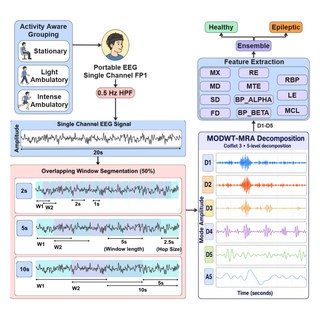

MODWT-MRA-Based Activity-Aware Epilepsy Discrimination Using Single-Channel Wearable EEG During Activities of Daily Living

Abstract
Automated EEG-based epilepsy discrimination has been studied extensively, but most approaches rely on multichannel recordings acquired under controlled conditions, limiting applicability to wearable monitoring during daily activities. This study presents an activity-aware discrimination framework using portable single-channel EEG acquired from the frontopolar (FP1) position during activities of daily living (ADL). The pipeline combines short-window segmentation, maximal overlap discrete wavelet transform multiresolution analysis (MODWT-MRA), and interpretable handcrafted amplitude, temporal-variation, nonlinear-energy, entropy, and spectral features. The framework is evaluated on 90 recordings (60 healthy, 30 epileptic) under four settings: combined, stationary, light ambulatory, and intense ambulatory. The selected configuration uses 5 s windows with 50% overlap and an ensemble classifier. Under leave-one-recording-out (LORO) validation with nested Bayesian hyperparameter selection, the primary evaluation, the ensemble achieves accuracies of 80.00%, 79.15%, 84.79%, and 85.71%, with balanced accuracies of 73.43–83.87% and sensitivities of 57.14–79.76%. Nested segmentlevel 10-fold cross-validation, a within-recording estimate, yields 89.37%, 88.42%, 94.47%, and 93.51%. Under LORO, MODWT-MRA features give the ensemble higher accuracy than raw-segment features in every setting and than decimated-wavelet features in the stationary and intense ambulatory settings, and the complete pipeline requires approximately 20–115 ms per 5 s segment on a laptop processor. These results establish recording-level generalization only and provide a proof of concept for epilepsy/healthy cohort discrimination using wearable single-channel EEG.
In one line
Tells epileptic and healthy subjects apart during everyday activities, using MODWT multiresolution features from a single wearable EEG channel.
Cite
@article{bhuiyan2026modwtmrabased,
title = {MODWT-MRA-Based Activity-Aware Epilepsy Discrimination Using Single-Channel Wearable EEG During Activities of Daily Living},
author = {Md. Mehedi Hasan Bhuiyan and Sadman Rahman and Mahdia Binte Maksud and Tahiya Iffat Majumder and Kazi Newaj Faisal},
journal = {Results in Engineering},
year = {2026}
}
Related papers
- Single-Channel Wearable EEG for ADL Recognition in Healthy and Epileptic Cohorts Using MODWT-MRA and Machine LearningBiomedical Signal Processing and Control · 2026
- HatSeqNet: A Sequence-Based Deep Learning Model for Cross-Subject Driver Drowsiness Detection Using Single-Channel EEG SignalIEEE Sensors Journal · 2026
- Exploring Gamma-Band Filtered Features and Machine Learning for Resource-Efficient Multi-Level Cognitive Load Classification Using EEGIEEE QPAIN · 2026